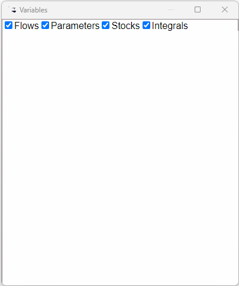

Next: Wires
Up: Variables and Parameters
Previous: Sliders
Contents

The browser can be accessed in two ways:
- From the Insert Menu; or
- From the
widget, which brings up a horizontal
menu for defining, constants, parameters and variables. Click on the
final option on this menu, ``Browser'', to bring up the window.
The variable browser is a popup window that shows all currently
defined variables in the system. It is an ``always on top'' window,
which will be visible over any other window including those for Ravel/Minsky
(and those for other programs which you have open at the time). This
facilitates its use as a means to insert multiple variables into a
model.
This is a convenience toolbar that allows one to select a variable
for insertion into the design canvas, instead of having to type the
new variable's name from scratch.
At the top of the variable browser are some filter checkboxes, that
allow you filter the variables shown by variable type.